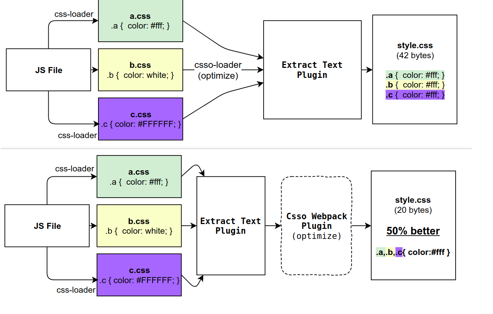

some interview question
- interview
✨✨✨You can Edit this Article on Github site
✏️✏️✏️ This article .MD file was last updated at:
Loading ...
下面是个人列出的一些前端面试方面的问题（没有先后顺序，也没有优先级之分）
这个是我自己总结的一些面试内容集合
手动实现的轮子
call、apply、bind- 符合 Promise/A+规范的
Promise、asyncawait、co EventEmitternew- 双向绑定
JSON.stringify、JSON.parse- 简易模版引擎
浏览器工作原理系列
- 关键渲染路径
- 浏览器的工作原理：新式网络浏览器幕后揭秘
- Inside look at modern web browser (part 1)
- 中字 Inside look at modern web browser
- 浅析浏览器渲染原理
- 浏览器渲染全过程以及常遇到的问题
- life of pixel
- 【中字】像素的一生 Life of a Pixel - Steve Kobes(Chrome Team)
JavaScript
- ES6 class 与 ES5 function 区别及联系
- JavaScript 执行（四）：try 里面放 return，finally 还会执行吗？
- 最详尽的 JS 原型与原型链终极详解，没有「可能是」
new的实现- Babel Class Extend 的实现
- 我的博客 谈谈 Node.js 的单线程
- How to pass the Node.js interview of ElemeFE
前端性能监控系列
webpack
loader && webpack plugins 一些简单的区别：
loader 在生成包期间或之前在单个文件级别工作。
plugins 在 bundle 或 chunk 级别工作，通常在 bundle 生成过程结束时工作。plugins 还可以修改捆绑包本身的创建方式。插件比 loader 具有更强大的控制能力。

webp 图片的浏览器兼容检测
- canvas 检测：
return /^data:image\/webp/.test(
document.createElement('canvas').toDataURL('image/webp', 0.5),
)
- HTTP header：浏览器在图片请求发出的时候，Request Headers 里有 Accept，服务端可以根据 Accept 里面是否有 image/webp 进行判断。
- new Image：先加载一个 WebP 图片，如果能获取到图片的宽度和高度，就说明是支持 WebP 的，反之则不支持
DSL
docker 和 K8S
React
- 单页面应用路由实现原理：以 React-Router 为例
- 谈谈 React 事件机制和未来(react-events)
- 完全理解 React Fiber
- React 面试题 & 回答（内容非常多，强烈推荐）
RN
Event Loop
堆内存与栈内存
koa
- Koa2 中间件原理解析
- pm2 && cluster
HTTPS
HTTPS 采用共享密钥加密和公开密钥加密两者并用的混合加密机制。在交换密钥使用环节使用公开密钥加密方式，之后建立的通信交换报文阶段则使用共享密钥加密方式。
垃圾回收策略
栈使用的是一级缓存， 他们通常都是被调用时处于存储空间中，调用完毕立即释放，由编译器自动分配释放 。存放函数的参数值，局部变量的值等。其操作方式类似于数据结构中的栈
堆则是存放在二级缓存中，生命周期由虚拟机的垃圾回收算法来决定。所以调用这些对象的速度要相对来得低一些。其操作方式类似于数据结构中的树